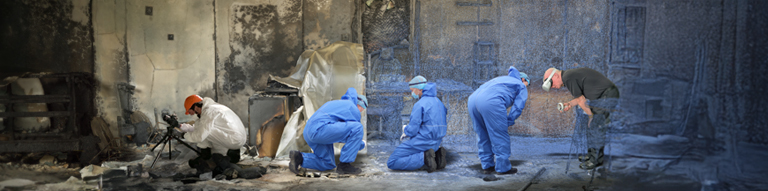

Virtual Reality as a tool for Forensic Science
Publications
Development of a Dundee Ground Truth imaging protocol for recording indoor crime scenes to facilitate virtual reality reconstruction
S. Yu, G. Thomson, V. Rinaldi, C. Rowland, N. Nic Daeid
Science & Justice, 2023
Virtual Reality as a Collaborative Tool for Digitalised Crime Scene Examination
V. Rinaldi, L. Hackman, N. NicDaeid,
Lecture Notes in Computer Science, Extended Reality, 2022
Examination of fire scene reconstructions using virtual reality to enhance forensic decision-making. A case study in Scotland.
V. Rinaldi, K.A. Robertson, G.G. Strong, N. NicDaeid
Virtual Reality, 2024.
Virtual reality aiding fire scene investigation: A thankless endeavor or catalyst for change?
V. Rinaldi, E. Ljungkvist, B. Thomsen, N. Nic Daeid
WIREs Forensic Science, 2024.
